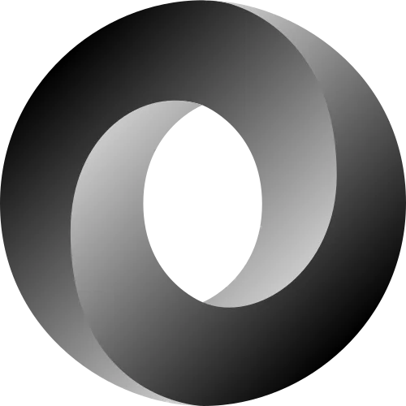

- HTML
- CSS
-
 JAVASCRIPT
JAVASCRIPT - JQUERY
- REACTJS
- ASTRO
- TAILWIND
- BOOTSTRAP
-  JSON
- SQL
- MYSQL
- SQLITE
- GIT
- GITHUB
Hey, soy Juan Palma,
Soy Desarrollador Frontend autodidacta con más de 2 años de experiencia. Me especializo en Astro.js, React, Vite, Tailwind y CSS, construyendo interfaces modernas, escalables y con alto rendimiento.
He llevado a cabo múltiples proyectos personales y colaborativos: desde sitios estáticos con Astro.js y Vite, hasta aplicaciones interactivas con React y estilos limpios con Tailwind.
A continuación presento mis proyectos.
Proyectos
-
Landing page de la JSConf2024 (NO OFICIAL)
Confección de la landing page JSConf 2024 no oficial, realizado con Astro, Tailwind y CSS nativo.
-
Landing page de la Velada IV
Confección de la landing de la Velada IV copiada de @Midudev, realizado con Astro, Tailwind y CSS nativo.
-
Porfolio-dev
Porfolio Dev realizado con Astro, Tailwind y Flowbite.
-
Portafolio Web con HTML, Css Nativo, JavaScript
Primer porfolio realizado con HTML, CSS nativo, JQuery y Bootstrap.
-
Portafolio 3
Ejercicio de Portafolio creado con html, css, javascript, jquery, bootstrap
-
Portafolio con Astrojs
Ejercicio de Portafolio creado con AstroJS, Tailwind, Flowbyte y css nativo
-
Landing de la Desvelada V
Copia de la Landing de la Velada V
Formación
-
Realización de cursos y proyectos sacados de Youtube
Realización de proyectos en Astro y React de Youtube para aprender nuevas tecnologías, técnicas y herramientas de programación
-
Realización varios cursos de programación
Realización de forma exitosa de varios cursos de programación web en la plataforma Platzi y en el programa Jóvenes Programadores de Biblioredes
-
Realización de varios cursos de Programación en Platzi y proyectos de Youtube.
Realización de varios cursos de Programación en Platzi y proyectos de Youtube en lenguajes como html, css, javascript, php, c#, React.
Mis Skills son:
Desarrollo web
Contacto:
Si deseas contactarme puedes hacerlo a través de los siguientes links.
Subir